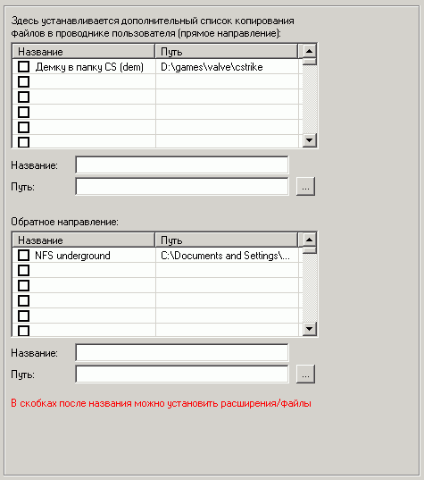

Можно также дать пользователю возможность копирования файлов в/из папок на компьютере, не давая доступ к самим этим папкам в проводнике пользователя.
Например, бывает нужно сохранить настройки игр, или переписать пользователю некоторые файлы.
Для этого существует прямое и обратное направление (в/из).
Эти папки будут доступны пользователю в проводнике пользователя по правому клику мыши на файлах.
Для прямого направления в скобках можно устанавливать разрешенные расширения (файлы), чтобы нельзя было скопировать другие файлы. Для обратного направления можно использовать маски файлов.
См. также
"сохранение/восстановление настроек"